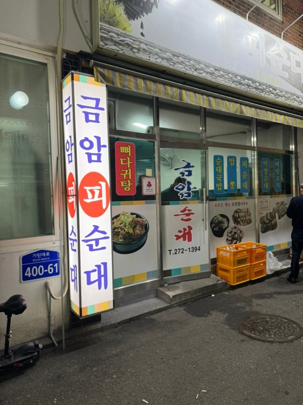
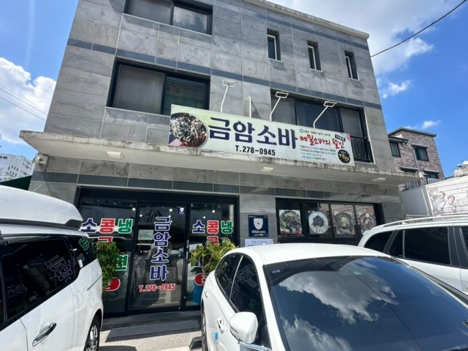
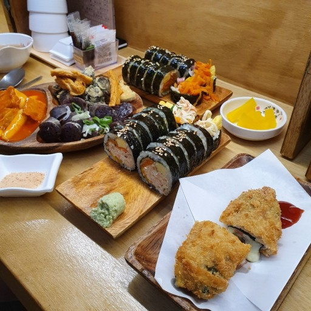
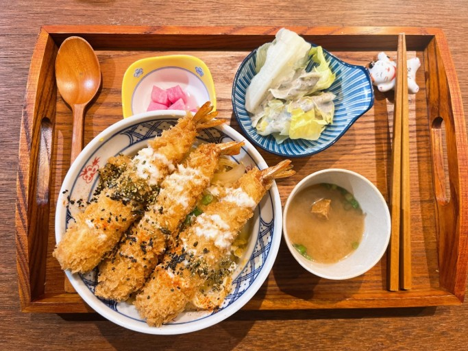
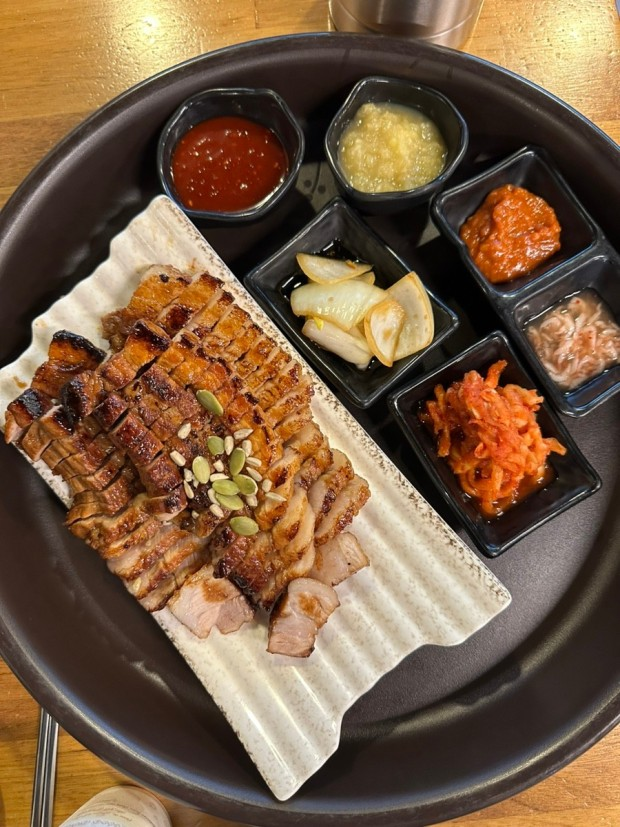
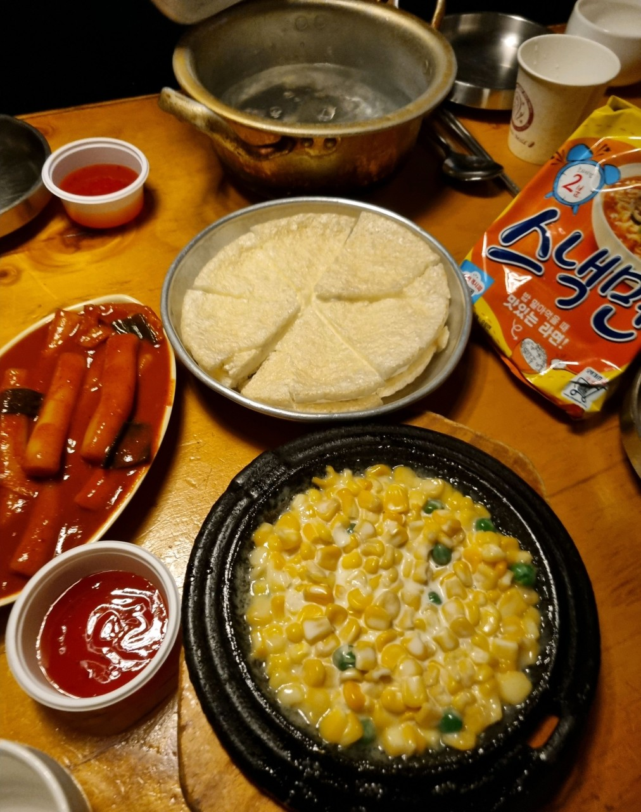

전북대학교 신정문
전북대학교 신정문은 다양한 로컬 맛집들이 모여있으며, 금암00의 식당들이 모여있는 장소이다. 다만 신정문을 나가는데 오래걸리기 때문에 긴 공강시간에만 먹을 수 있다.
금암피순대
금암피순대는 현지인 찐맛집 피순대 국밥 맛집이다. 피순대가 호불호가 갈리지만 국밥을 좋아한다면 추천한다. 피순대 국밥은 9000원이다.
금암소바
금암소바는 감칠 맛이 나는 소바이다. 일식소바느낌 보다는 한국식 메밀 소바의 느낌이다. 더운 여름에 인기가 많은 식당이다. 소바와 콩국수를 추천하며 9000원이다.
또또분식
또또분식의 떡볶이는 달달한 소스이다. 또또분식은 떡볶이도 유명하지만 수제모둠튀김과 게살와사비김밥으로 유명해진 집이다. 떡볶이 4500원, 모둠튀김 5000원, 게살와사비김밥 4500원으로 구성되어있다.
전북대학교 구정문
전북대학교 구정문은 학생들의 약속의 장소이다. 점심, 저녁, 술 약속이 모두 가능한 곳이여서 학생들이 북적거린다.
하나요리당고
하나요리당고는 일식덮밥집으로 점심시간에 가면 빈자리가 없을 정도로 북적거린다.. 다른 일식 덮밥집보다 저렴한 편이고 맛있어서 인기가 많은 집이다. 덮밥류의 가격은 10000-11000원이다.
황제보쌈
황제보쌈은 전북대학교에 다니면 모를수가 없는 유명 맛집이다. 밥약 장소로 가장 많이 가며 보쌈정식이 9500원으로 저렴한 편이다.
누룩꽃 피는 날
누룩꽃 피는 날은 막걸리를 파는 술집이다. 기본 안주도 많고 안주류도 양이 많고 맛있어서 유명한 집이다 다양한 과일 막걸리를 맛볼수 있으며 메인 메뉴는 마약육전과 쫄면이다.
